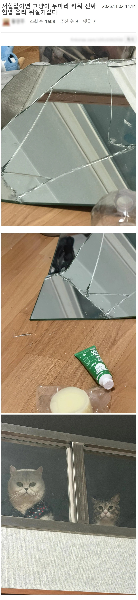
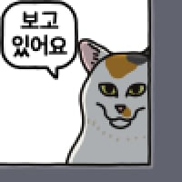
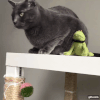
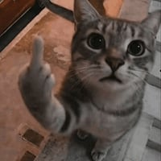
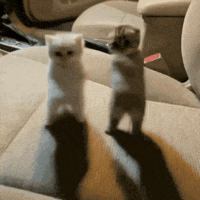
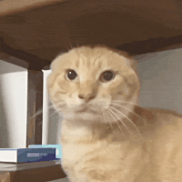
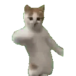
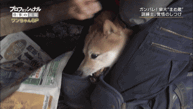
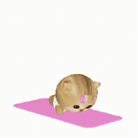

애옹😸

애옹😸
고양이와 좆냥이는 같은말이다
알려줘서 좆마워냥
디폴트가 ㅈ냥이고 변종이 개냥이인거지
뭘보냐 집사야 얼른치워라 찔릴까봐 무섭다
니가 선택한 털바퀴다 악으로 깡으로 버텨라
뭘 꼬라보냥
저 어쩌라고 하는 표정 ㅋㅋㅋ
저건 집사잘못임, 물건이랑 가구배치를 잘 했어야지, 난 4마리 키우는데 잘만키움
4마리가 너 키우는게 아닐까?
그런거 같기두 해
유리보면 복층같기도?
내가 보기에도 좁은데서 두마리 키워 지랄난듯


옷도 입혀놨네ㅋㅋㅋㅋㅋ
그냥 미친 애들 키운거 아니나
ㅋㅋㅋㅋ
항상 난리를 칠거라는 가정하에 물건냅둬야함
왼쪽냥이 존나 강해보이는데 시발;;

눈빛 보소!!

거울은 벽 붙박이로 하고 유리제품은 무조건 쓰고나면 찬장 안에 넣고 바깥에 두는 컵은 싹다 플라스틱 아니면 금속제로 해야 함. 어케 아냐고? 묻지마라....후우...
좆냥이 존나 싫어 ㅋㅋ
고양이는 진짜 다른 의미로 힐링이 됨. 이런저런 세상 일로 스트레스 받다가도, 얘넨 이렇게나 뻔뻔하고 도도한데 난 왜 겨우 이런 일로 걱정을 사서 하고 있나 싶어서 힐링이 되더라. ㅋㅋ


강쥐하나 17년키우고 보내니까 진이 빠져서 다신 동물 안키울거임 작별의 순간은 다신 경험하고싶지않음



고양이마다 다름 울집고양이는 얌전해
부모묘랑 빨리 떨어졌거나 그러면 지랄 더 심함
물 올려라

암튼 주인잘못임
냥바냥이야... ㄹㅇ로

좀 버려라
날씨도 추운데 스트리트 캣 되고 싶나보다

집사야 내가 뭘 잘못했냥. 거울을 거기에 둔 네 녀석 잘못이다냥.
고양이를 키워야지
좆냥이를 키우면 어캐